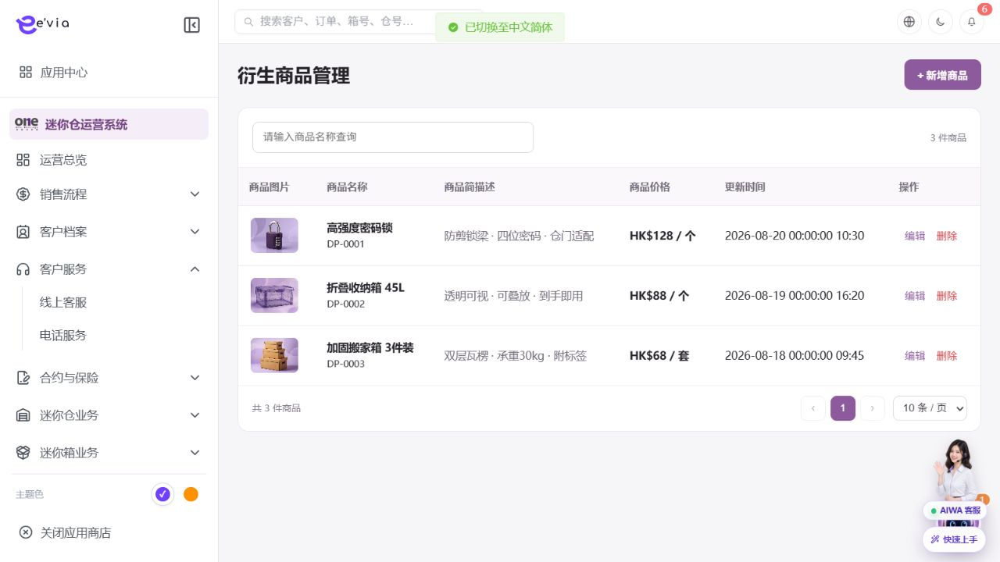

PRODUCT REQUIREMENTS
衍生商品管理 PRD
下载 Word 文档衍生商品管理 PRD
运营后台研发详细需求规格 · V2.0 · 2026-09-08
1 文档目标与范围
维护纸箱、耗材等商品、SKU、价格、库存、上下架和履约方式。 本文档明确页面字段、操作流程、业务规则、跨端契约、权限和验收条件。
| 属性 | 内容 |
|---|---|
| 文档编号 | OS-OPS-PRD-21 |
| 产品基线 | AiwaBot产品原型 V3.2 与 OneStorage运营后台原型 V1.1 |
| 版本 | V2.0 2026-09-08 |
1.1 原型界面依据
以下截图直接取自 AiwaBot产品原型-v3.2.html，用于核对页面布局、入口、字段和操作位置。

2 页面结构与查询
2.2 筛选条件
| 筛选项 | 规则 |
|---|---|
| 商品编号、名称或SKU | 支持组合查询、重置和返回保留。 |
| 品类 | 支持组合查询、重置和返回保留。 |
| 店铺 | 支持组合查询、重置和返回保留。 |
| 库存状态 | 支持组合查询、重置和返回保留。 |
| 上架状态 | 支持组合查询、重置和返回保留。 |
3 列表字段规格
| 字段ID | 字段 | 来源 | 展示与交互规则 |
|---|---|---|---|
| OS-OPS-PRD-21-L01 | 商品编号 | 服务端主键或业务编号 | 完整展示并支持复制；唯一且不可使用展示名称代替。 |
| OS-OPS-PRD-21-L02 | 品类 | 业务主域 | 详情与导出保持一致；空值显示—，不使用模拟值补齐。 |
| OS-OPS-PRD-21-L03 | 商品名称 | 业务主域 | 详情与导出保持一致；空值显示—，不使用模拟值补齐。 |
| OS-OPS-PRD-21-L04 | SKU | 业务主域 | 详情与导出保持一致；空值显示—，不使用模拟值补齐。 |
| OS-OPS-PRD-21-L05 | 规格 | 业务主域 | 详情与导出保持一致；空值显示—，不使用模拟值补齐。 |
| OS-OPS-PRD-21-L06 | 销售价 | 业务主域 | 详情与导出保持一致；空值显示—，不使用模拟值补齐。 |
| OS-OPS-PRD-21-L07 | 可售库存 | 业务主域 | 详情与导出保持一致；空值显示—，不使用模拟值补齐。 |
| OS-OPS-PRD-21-L08 | 履约方式 | 业务主域 | 详情与导出保持一致；空值显示—，不使用模拟值补齐。 |
| OS-OPS-PRD-21-L09 | 适用店铺 | 组织或门店主数据 | 显示名称并保留ID；数据范围变化后重新校验。 |
| OS-OPS-PRD-21-L10 | 上架状态 | 服务端枚举 | 以标签显示；筛选、导出和详情使用同一枚举文案。 |
| OS-OPS-PRD-21-L11 | 更新时间 | 服务端/关联主数据 | 服务器更新时间，格式YYYY-MM-DD HH:mm:ss。 |
| OS-OPS-PRD-21-L12 | 操作 | 服务端/关联主数据 | 根据allowedActions显示查看、编辑及状态动作；后端再次鉴权。 |
4 新增与编辑表单
| 字段ID | 字段 | 控件 | 必填 | 校验与保存规则 |
|---|---|---|---|---|
| OS-OPS-PRD-21-F01 | 商品名称 | 文本框 | 条件必填 | 去除首尾空格；保存原始值与标准化值。 |
| OS-OPS-PRD-21-F02 | 商品编号 | 只读或检索选择 | 系统生成/必填 | 新增时由服务端生成；关联编号必须存在且在数据范围内。 |
| OS-OPS-PRD-21-F03 | 品类 | 文本框 | 条件必填 | 去除首尾空格；保存原始值与标准化值。 |
| OS-OPS-PRD-21-F04 | SKU | 文本框 | 条件必填 | 去除首尾空格；保存原始值与标准化值。 |
| OS-OPS-PRD-21-F05 | 规格 | 文本框 | 条件必填 | 去除首尾空格；保存原始值与标准化值。 |
| OS-OPS-PRD-21-F06 | 条码 | 文本框 | 条件必填 | 去除首尾空格；保存原始值与标准化值。 |
| OS-OPS-PRD-21-F07 | 图片 | 文件上传 | 条件必填 | 使用短期签名上传，校验类型、大小、哈希和病毒扫描结果。 |
| OS-OPS-PRD-21-F08 | 销售价 | 文本框 | 条件必填 | 去除首尾空格；保存原始值与标准化值。 |
| OS-OPS-PRD-21-F09 | 成本价 | 金额输入 | 条件必填 | 输入大于等于0，最多两位小数；服务端以最小货币单位重算。 |
| OS-OPS-PRD-21-F10 | 可售库存 | 文本框 | 条件必填 | 去除首尾空格；保存原始值与标准化值。 |
| OS-OPS-PRD-21-F11 | 安全库存 | 文本框 | 条件必填 | 去除首尾空格；保存原始值与标准化值。 |
| OS-OPS-PRD-21-F12 | 履约方式 | 单选或下拉选择 | 必填 | 选项来自服务端字典；提交编码值，界面显示名称。 |
| OS-OPS-PRD-21-F13 | 适用店铺 | 单选或下拉选择 | 必填 | 选项来自服务端字典；提交编码值，界面显示名称。 |
| OS-OPS-PRD-21-F14 | 限购数量 | 数字输入 | 条件必填 | 仅允许业务配置范围内的整数；服务端再次校验。 |
| OS-OPS-PRD-21-F15 | 上架时间 | 日期或日期时间 | 必填 | 服务端校验起止顺序、营业日和截止规则。 |
| OS-OPS-PRD-21-F16 | 下架时间 | 日期或日期时间 | 必填 | 服务端校验起止顺序、营业日和截止规则。 |
| OS-OPS-PRD-21-F17 | 商品说明 | 多行文本 | 条件必填 | 最多500字；拒绝或异常原因不得只输入空白。 |
5 操作与处理流程
| 操作ID | 操作 | 前置条件与系统处理 | 结果与失败处理 |
|---|---|---|---|
| OS-OPS-PRD-21-A01 | 新增商品 | 建立SPU和至少一个SKU。 | 成功后刷新详情和时间线；失败保留输入并显示错误码。 |
| OS-OPS-PRD-21-A02 | 调整库存 | 使用入库、出库、盘点或修正单，不直接覆盖库存。 | 成功后刷新详情和时间线；失败保留输入并显示错误码。 |
| OS-OPS-PRD-21-A03 | 调整价格 | 创建新价格版本并设置生效时间。 | 成功后刷新详情和时间线；失败保留输入并显示错误码。 |
| OS-OPS-PRD-21-A04 | 上下架 | 检查图片、描述、价格和库存。 | 成功后刷新详情和时间线；失败保留输入并显示错误码。 |
| OS-OPS-PRD-21-A05 | 查看订单 | 按商品或SKU下钻关联订单。 | 成功后刷新详情和时间线；失败保留输入并显示错误码。 |
6 状态机与业务规则
| 对象 | 状态流转 |
|---|---|
| 衍生商品管理 | 草稿→待上架→销售中→售罄/下架 |
| 异步任务 | 待执行→执行中→成功/失败→重试/人工处理 |
| 规则ID | 业务规则 |
|---|---|
| OS-OPS-PRD-21-R01 | SKU全局唯一 |
| OS-OPS-PRD-21-R02 | 可售库存=实物库存-锁定库存 |
| OS-OPS-PRD-21-R03 | 支付超时释放锁定 |
| OS-OPS-PRD-21-R04 | 价格和库存由服务端校验 |
| OS-OPS-PRD-21-R05 | 已成交订单保留商品与价格快照 |
| OS-OPS-PRD-21-R06 | 所有写请求携带clientRequestId和expectedVersion，重复请求返回首次结果 |
| OS-OPS-PRD-21-R07 | 服务端返回allowedActions，前端仅据此展示按钮，后端仍逐动作鉴权 |
| OS-OPS-PRD-21-R08 | 列表、详情、关联选择器、统计和导出使用同一数据范围 |
| OS-OPS-PRD-21-R09 | 创建、编辑、状态流转、导出、下载和审批均记录操作审计 |
| OS-OPS-PRD-21-R10 | 第三方调用失败不得伪装主业务成功，进入可重试或人工处理状态 |
7 业务处理链路
•
配置和治理操作使用审批、发布和版本管理
•
下游状态变化通过领域事件处理
•
批量和异步任务提供状态与失败明细
8 跨端交互规则
| 规则ID | 交互规则 |
|---|---|
| OS-OPS-PRD-21-X01 | 客户小程序按店铺和履约方式展示商品 |
| OS-OPS-PRD-21-X02 | 购物车和结算重新校验价格库存 |
| OS-OPS-PRD-21-X03 | 退款或取消按规则释放或回补库存 |
•
客户小程序仅访问本人数据，工单小程序仅访问本人或团队任务
•
深链打开后重新校验身份、权限和最新状态
•
金额、库存、状态和allowedActions必须回源
•
离线重试沿用同一clientRequestId
9 接口与事件契约
| 契约 | 路径或事件 | 要求 |
|---|---|---|
| 列表 | GET /ops/v1/merchandise | 分页、排序、筛选、数据范围和脱敏 |
| 详情 | GET /ops/v1/merchandise/{id} | version、关联对象、时间线和allowedActions |
| 新增 | POST /ops/v1/merchandise | clientRequestId幂等 |
| 编辑 | PATCH /ops/v1/merchandise/{id} | expectedVersion并发控制 |
| 动作 | POST /ops/v1/merchandise/{id}/actions/{action} | 动作级权限和状态前置 |
| 事件 | 衍生商品管理.Changed.v1 | eventId、aggregateId、version和occurredAt |
10 异常与边界处理
| 场景 | 处理 |
|---|---|
| 400字段错误 | 字段级提示并保留输入 |
| 403无权限 | 拒绝并记录审计 |
| 404不存在 | 不泄露额外对象信息 |
| 409版本冲突 | 刷新后重新操作 |
| 重复请求 | 返回首次幂等结果 |
| 第三方失败 | 进入重试或人工处理 |
11 验收标准
| 验收ID | 验收条件 |
|---|---|
| OS-OPS-PRD-21-AC01 | 列表字段、筛选、分页、排序和导出一致 |
| OS-OPS-PRD-21-AC02 | 表单字段、必填和跨字段校验完整 |
| OS-OPS-PRD-21-AC03 | 所有动作同时校验权限、数据范围和状态 |
| OS-OPS-PRD-21-AC04 | 重复请求无重复记录或副作用 |
| OS-OPS-PRD-21-AC05 | 跨端编号、状态、金额和时间一致 |
| OS-OPS-PRD-21-AC06 | 异常和空数据有明确反馈 |
| OS-OPS-PRD-21-AC07 | 敏感字段按权限脱敏并审计 |
| OS-OPS-PRD-21-AC08 | P0规则具有自动化测试 |